Bokeh is a Python interactive visualization library that targets modern web browsers for presentation. Its goal is to provide elegant, concise construction of novel graphics in the style of D3.js, but also deliver this capability with high-performance interactivity over very large or streaming datasets. Bokeh can help anyone who would like to quickly and easily create interactive plots, dashboards, and data applications.
For more information about the goals and direction of the project, please see the Technical Vision.
To get started quickly, follow the Quickstart.
To see examples of how you might use Bokeh with your own data, check out the Gallery.
For questions and technical assistance, come join the Bokeh mailing list.
Visit the GitHub source repository.
Be sure to follow us on Twitter @bokehplots, as well as on Vine, and Youtube!
 |
 |
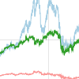 | 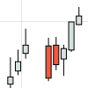 |  |
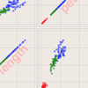 | |
| 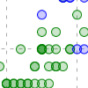 | 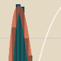 | 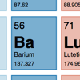 |  |
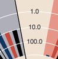 | 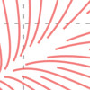 | 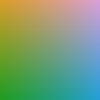 |
| 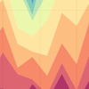 | 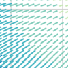 | 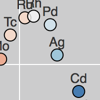 |  |
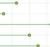 | 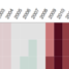 | 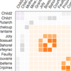 |
Photographers use the Japanese word “bokeh” to describe the blurring of the out-of-focus parts of an image. Its aesthetic quality can greatly enhance a photograph, and photographers artfully use focus to draw attention to subjects of interest. “Good bokeh” contributes visual interest to a photograph and places its subjects in context.
In this vein of focusing on high-impact subjects while always maintaining a relationship to the data background, the Bokeh project attempts to address fundamental challenges of large dataset visualization:
Some of the core ideas for the backend processing in bokeh-server are currently implemented as a standalone library, and are being developed under the term “Abstract Rendering”, which we will be presenting at VDA 2014. For more information, you can visit the Abstract Rendering GitHub page.
Bokeh is one of several open-source components of the broader technical vision of Anaconda. By providing powerful data description and vector computing on remote and distributed data via Blaze and Numba, and providing interactive visualizations of them via Bokeh, we enable teams to collaboratively perform rich analysis, share them with others (potentially non-technical members of their team or business), and rapidly create analytical dashboards and monitoring interfaces.
One guiding principle for the development of Bokeh is to provide useful software for people, while incorporating novel ideas from the academic world of visualization research. Additionally, as a modular and open-source project, we hope that Bokeh will enable many other projects to build a rich suite of domain-specific applications that change existing, legacy paradigms of data processing workflow.
For questions and technical assistance, come join the Bokeh mailing list.
You can also ask and read questions on StackOverflow with the #bokeh tag.
Follow us on Twitter @bokehplots! When tweeting about how awesome Bokeh is, be sure to use the #bokeh hashtag!
For information about commercial development, custom visualization development or embedding Bokeh in your applications, please contact pwang@continuum.io.
To donate funds to support the development of Bokeh, please contact info@pydata.org.
Bokeh is developed with funding from DARPA‘s XDATA program.
Additionally, many thanks to all of the Bokeh contributors.
Traditional 3-clause BSD license:
Copyright (c) 2012, Anaconda, Inc. All rights reserved.
Redistribution and use in source and binary forms, with or without modification, are permitted provided that the following conditions are met:
Redistributions of source code must retain the above copyright notice, this list of conditions and the following disclaimer.
Redistributions in binary form must reproduce the above copyright notice, this list of conditions and the following disclaimer in the documentation and/or other materials provided with the distribution.
Neither the name of Anaconda nor the names of any contributors may be used to endorse or promote products derived from this software without specific prior written permission.
THIS SOFTWARE IS PROVIDED BY THE COPYRIGHT HOLDERS AND CONTRIBUTORS “AS IS” AND ANY EXPRESS OR IMPLIED WARRANTIES, INCLUDING, BUT NOT LIMITED TO, THE IMPLIED WARRANTIES OF MERCHANTABILITY AND FITNESS FOR A PARTICULAR PURPOSE ARE DISCLAIMED. IN NO EVENT SHALL THE COPYRIGHT OWNER OR CONTRIBUTORS BE LIABLE FOR ANY DIRECT, INDIRECT, INCIDENTAL, SPECIAL, EXEMPLARY, OR CONSEQUENTIAL DAMAGES (INCLUDING, BUT NOT LIMITED TO, PROCUREMENT OF SUBSTITUTE GOODS OR SERVICES; LOSS OF USE, DATA, OR PROFITS; OR BUSINESS INTERRUPTION) HOWEVER CAUSED AND ON ANY THEORY OF LIABILITY, WHETHER IN CONTRACT, STRICT LIABILITY, OR TORT (INCLUDING NEGLIGENCE OR OTHERWISE) ARISING IN ANY WAY OUT OF THE USE OF THIS SOFTWARE, EVEN IF ADVISED OF THE POSSIBILITY OF SUCH DAMAGE.